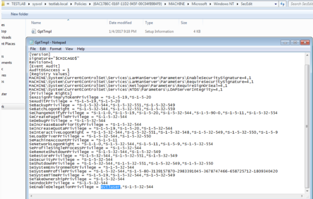

Read more here
TL;DR we can’t modify delegation specific user account control settings NOR the msDS-AllowedToDelegateTo field for targets (even if we have full control of the object) if we don’t have the SeEnableDelegationPrivilege right.
Since SeEnableDelegationPrivilege is applicable only on a domain controller itself, we need to check if any group policy object applied to a domain controller modifies the user right assignments for that given DC. In most cases, this will be the “Default Domain Controllers Policy” (GUID = {6AC1786C-016F-11D2-945F-00C04FB984F9}). This is exactly what the Get-DomainPolicy -Source DC PowerView function will do.
TL;DR: if we control an object that has SeEnableDelegationPrivilege in the domain, AND said object has GenericAll/GenericWrite rights over any other user object in the domain, we can compromise the domain at will, indefinitely.
Given elevated domain rights OR edit rights to the default domain controller GPO (something @_wald0, @cptjesus, and I are currently working on for BloodHound) for just a few minutes, you can make a single modification to the given GPO to implement this backdoor. This GPO is located at \\DOMAIN\sysvol\testlab.local\Policies\{6AC1786C-016F-11D2-945F-00C04fB984F9}\MACHINE\Microsoft\Windows NT\SecEdit\GptTmpl.inf. By adding any user SID or username to the SeEnableDelegationPrivilege line of the [Privilege Rights] section, the setting will take hold whenever the user/machine’s current DC reboots or refreshes its group policy.

If eviluser has full rights over ANY user in the domain, we can modify that user’s msDS-AllowedToDelegateTo value to be whatever target service we want to compromise. We can also modify the TRUSTED_TO_AUTHENTICATE_FOR_DELEGATION UAC flag if needed. In this case, let’s use ldap/DOMAIN_CONTROLLER to facilitate DCSyncing at will.
If eviluser has GenericAll over any target victim, then we don’t even have to know the victim user’s password. We can execute a force password reset using Set-DomainUserPassword to a known value and then execute the asktgt.exe/s4u.exe attack flow.